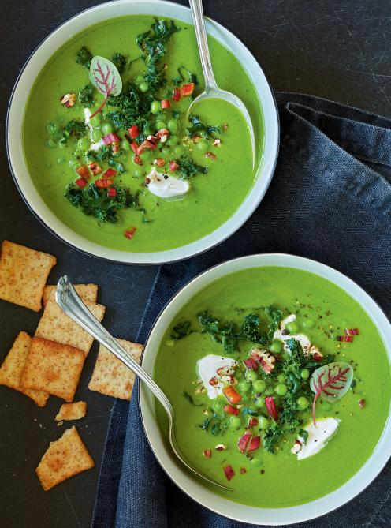
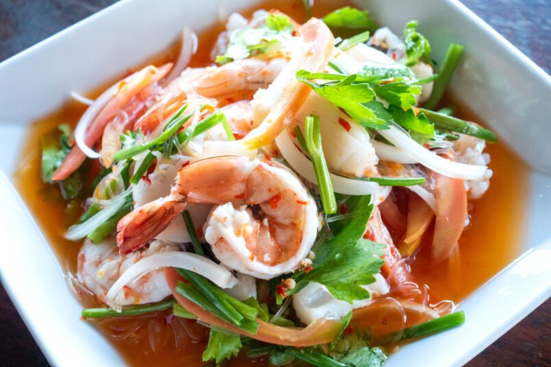

HEALTHY CORNER Menu
Les soupes
-
Soupe de carotte : pommes de terre, carotte .
-
Soupe de légumes verts : épinards, le brocoli, le poireau et les courgettes.
-
Soupe de courgettes: Petits choux au fromage servis chauds.

Les salades
-
Salade Caprese: Tomates fraîches, mozzarella et basilic arrosés d'un glaçage balsamique.
-
Bruschetta: Pain grillé garni de tomates hachées, ail et basilic frais.
-
Gougères: Petits choux au fromage servis chauds.

les plats
-
Saumon grillé: Filet de saumon assaisonné et grillé à la perfection, servi avec une sauce au beurre citronné.
-
Poulet au citron: Blanc de poulet mariné, rôti et servi avec des légumes de saison.
-
Pâtes Primavera: Pâtes fraîches avec des légumes de saison et une sauce légère à l'ail.
Desserts
-
Fondue au chocolat: Assortiment de fruits et de guimauves servis avec une riche fondue au chocolat.
-
Tarte Tatin: Tarte aux pommes caramélisées servie tiède avec de la crème fraîche.
-
Mousse au chocolat: Mousse légère et aérienne au chocolat noir, garnie de crème fouettée.
Bonne appétit
Contactez-nous pour les réservations